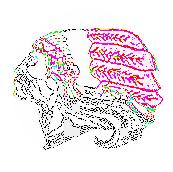
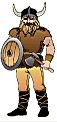

|
 |
Framåt, tappra kamrater!
Gösta och Yngve anlände sist till samlingsplatsen. Det var ett knep av dem; de hade båda det stolta medvetandet av att vara oumbärliga i ligan och kunde varje dag kosta på sig att låta de andra känna det. De togo en lång omväg från vedbodarna och gingo runt hela huslängorna innan de närmade sig samlingsplatsen. Båda två buro svärd och lans; men Gösta, som var lång och mager, hade dragit ett par säckbyxor med fransar ovanpå sina vanliga och fäst ett band med fjädrar kring huvudet, medan Yngve, kortvuxen och trind i ansiktet, tagit på sig en sliten krimmelmössa och lindat benen med snören - indianen och vikingen, Sitting Bull och Ragnar Lodbrok hade slutit fostbrödralag ! Ligan hälsade dem med vilda välkomsttjut, alla svingade och stötte med vapnen för att visa stridsberedskapen. Gösta stödde sig mot lansen och mönstrade lugnt truppen. - Hör på, tappra kamrater, sade han med det dystra allvar som anstår en stor indianhövding, barackgrabbarna har begärt hjälp av åtteligan vid Varvsgatan. Vi får en väldig övermakt mot oss. Det var bara ett infall som just då flög genom huvudet på honom för att han skulle kunna visa att det var han som satt inne med den politiska kunskapen, som en ledare bör äga; men det visade sig vara en taktiskt klok lögn; truppen tog emot meddelandet med ett vilt stridstjut, tanken på en eventuell övermakt att strida mot eldade den.
- Dom är fega, ropade någon, dom är rädda för oss, grabbar! Yngve, som för dagen blivit övertrumfad av kamraten, drog ihop sitt trinda ansikte till en ondskefull grimas, fast besluten att när det verkligen gällde visa sin rätta art, och slöt upp vid Göstas sida. De övriga formerade sig, larmande och hojtande, en efter en på indianvis, bakom dem; och så började frammarschen mot fiendelandet. Men när man passerat gränsen mellan de två ligornas domäner - vägen som på den tiden slingrade sig i nyckfulla bukter från tullen till Långholmen och Reymersholm - blev det tyst i ledet, spänningen ökades för varje minut: överallt, bakom kullar och busksnår, väntades fienden dyka upp. Men ingen fiende syntes till, modet eller övermodet stegrades inom truppen; och när den slutligen nådde barackerna, ett par rödmålade huslängor och tre ruffiga gamla stenhus, som lågo i en kvadrat kring en stor plan, utan att ha mött det minsta motstånd uppstämde Yngve ett verkligt bärsärkahärskri och störtade, tätt följd av de andra, in på planen, rakt in i fiendens borg. Där stod barackligan, fullt väpnad, för att överlägga om sina strategiska rörelser för dagen. I första häpnaden höllo de femton à sexton pojkarna på att lägga benen på ryggen och fly från sitt eget läger - så oväntat och överrumplande var anfallet. Men Bergsundspojkarna stannade tvärt ett dussin meter framför fienden; det var som om fräckheten i deras eget anfall med ens slagit dem och kommo dem, att tveka; , och för övrigt hörde det till krigsritualen att man inte skulle angripa förrän man eggat varandra med glåpord och utmaningar en stund. Gösta och Yngve på den ena sidan, Olle och Acke på den andra, skreko ut sina order, hoparna formerade ett slags front mot varandra, fientligheterna inleddes.
-Kom an bara, hojtade man på ena sidan, kom an bara, så ska vi göra mos av er
Och på den andra: Bergsundspojkarna uppstämde ett samfällt härskri och svängde lansar och träsvärd, barackpojkarna svarade med ett ännu fruktansvärdare stridstjut och gestikulerade med vapnen, de djärvaste på båda sidorna ryckte framåt några steg och började skifta hugg. Men i detsamma som striden höll på att ta allmän karaktär hände det någonting som med ens avbröt densamma. Egentligen var det ingenting märkligt. En man steg hastigt ut ur en av de närmaste dörrarna, stod ett ögonblick och stirrade litet förvirrat på pojkarna och slank sedan om hörnet och försvann, Någon av dem som ännu inte kommit med i striden såg honom då han dröjde utanför och yttrade halvt ofrivilligt: - Va sjutton kan de' vara för en gubbe? Flera andra tittade hastigt ditåt och märkte just som han försvann att det var en främling och att han bar sig besynnerligt åt: ingen vuxen brukar annars slinka undan så där skyggt, och inte heller brukade de vuxna ta den där vägen bort från husen, då den enda vägen ner till gatorna gick över planen. Några sekunder efter honom tumlade en liten flicka ut ur dörren och hamnade mitt bland de stridande; hennes ena kind var eldröd, kring ögat började en blåaktig svullnad att slå upp; och hon skrek i ett, liksom alldeles utom sig. - Han slog mej, gubben slog mej och tog mammas portmonnä! O, o, o, han tog portmonnän me' två kronor å tjugufyra öre! Han tog portmonnän! Pojkarna upphörde att strida och vände sig frågande mot henne. Acke, som ögonblicket förut varit hårt trängd av Gösta, rusade fram till henne och sade barskt:
- Hör'ru jäntunge, skrik inte så förbaskat - vem varje som tog portmonnän? Acke störtade fram; och som i en gemensam impuls följde honom hela barackligan till hörnet. Ungefär hundra meter bort gick mannen, som nyss kommit ut ur lägenheten; han såg sig just om, och då han fick syn på pojkarna ökade han farten och försvann bakom en bergknalle. Det verkade sannerligen som om han flydde. Pojkarna glömde med ens fienden, som de minuten tidigare börjat striden med, och hojtade i korus: - Efter honom! Efter honom ! Ta fast'en ! Ta fast'en! Så störtade de i väg. Bergsundsgrabbarna, så överraskande berövade sina motståndare, tvekade några sekunder, sedan störtade de också i väg. De hunno snart i kapp de andra; men då voro de inga fiender längre, de blandades med varandra, sprungo sida vid sida, som under högsommaren på den förenande badstranden: ett trettital pojkar jagande framåt efter ett gemensamt mål. Mannen framför dem gick så fort han kunde - med hukad överkropp och svängande armar - utan att falla över i språng; det verkade litet löjligt, som om han mitt i sin panik försökte bibehålla en manlig värdighet. Han såg sig ofta om, snubblade, höll på att tappa balansen; och för varje gång det hände uppstämde pojkhopen bakom honom ett förväntansfullt tjut. Äntligen nere på vägen, som slingrade sig i nyckfulla bukter mellan Brännkyrkagatan och Långholmen, saktade han farten en aning, han rätade på sig, strävade att gå oberört, som en vanlig flanerande. Då voro pojkarna bara ett tiotal meter ifrån honom, de upphörde att springa och följde honom i en tät klunga, litet tveksamma, litet förvirrade - det var i alla fall en vuxen man de höllo på att antasta, de flesta hade för övrigt inte fått riktigt klart för sig varför jakten börjat. - Hallå där, gubbe, ropade någon med upprört darrande röst, stanna ett tag så vi får snacka med dig! En hel hop brast ut i nervösa gapskratt; andra instämde med den första: - Hallå där, hallå där, vi kan välan få prata med dig ett tag! Mannen fortsatte utan att se sig om; men det ryckte i hans nacke, armarna rörde sig spasmodiskt. Acke rusade då fram så att han kom endast några meter ifrån honom; det såg ut som höll han på att ränna lansen i mannens rygg. - Hör du farbror, ropade han med ilsket gäll stämma, har du knyckt en portmonnä från en jänta uppe hos oss? Mannen ryckte till, som ämnade han verkligen stanna; i stället ökade han farten helt omärkligt. Efter en halv minut skulle han nå Brännkyrkagatan. Då klev Olle, en lång, gänglig pojke med aggressivt ansiktsuttryck, fram till kamraten, grep honom häftigt i armen och ropade högt; triumferande: - Vi följer efter'n, grabbar, vi följer efter'n ner i stan och säger åt en byling ! Då åker han fast! I samma ögonblick stannade mannen, han stannade som i ett anfall av oresonlig skräck, och vände sig om. Han hade ett magert, smutsgrått ansikte, hans ögon voro rödkantade, som av sömnlöshet, och hade ett jäktat och desperat rasande uttryck. Innan de två pojkarna hunnit dra sig undan hade han kastat sig framåt och gripit tag om nacken på Acke. - Era busungar, väste han med vredesgrumlig röst, jag ska ge er för att springa efter folk, jag ska ge er ! Olle, som hoppat undan då Acke blev fast, dängde i förbifarten till mannen med sin påle och skrek i en blandning av ångest och förtvivlans mod: - På'n grabbar, på'n grabbar! Pojkarna svarade med ett tjut, vildare än de någonsin förut åstadkommit i sina inbördesfejder, och, störtade fram, omringade den gemensamme fienden, hyttande, stickande och slående med de långa lansarna. Mannen släppte sitt offer och snurrade förvirrat runt för att försöka hugga tag i något av de långa, irriterande vapnen; irren i samma sekund han tog ett steg åt ett håll blev han anfallen av andra bakifrån eller från sidorna: det var omöjligt för honom att undkomma, omöjligt för honom, hur stor och stark han än var, att slåss mot denna hord av tjutande, skrikande, visslande och stickande avgrundsandar, som voro övermodiga i medvetandet om sin mängd och blevo det ännu mera vartefter de märkte sitt övertag. Efter några sekunders meningslöst rusande hit och dit gav han upp den ojämna kampen, bröt sig ut ur kretsen och löpte ett tiotal meter mot Brännkyrkagatan. - Efter'n grabbar, efter'n grabbar! hojtade pojkhopen i korus, vi säger till bylingen ! Då stannade han igen, vände sig hit och dit, tvekade som om han med ens blivit blind; så sprang han av vägen, hoppade över diket och störtade i full fart uppåt Bergsundsbergen. Det var det mest övertygande tecknet på ont samvete han kunnat ge sina förföljare; om någon av pojkarna känt tvekan förut, känt rädsla för att bryta mot den fadersinpräntade respekten mot en vuxen människa, så försvann denna nu fullkomligt; och under trettistämmigt triumferande skrän störtade hela pojkhopen i den flyendes spår.
- Framåt, framåt, tappra kamrater, hojtade Gösta och Yngve. Mannen jagade framåt med förtvivlans fart för att skaka av sig förföljarna, men det han vann på slättmarken och i början medan han hade friska krafter, det förlorade han snart när han nådde de knaggligare delarna av terrängen, där han måste göra omvägar, springa i krokår, medan barfotaungarna löpte rakt fram och klättrade som stengetter uppför knallarna. Då han hunnit målet som tydligen föresvävat honom, utförsvägen förbi Bergsunds varv till tullen, voro pojkarna endast tjugu meter efter. När han upptäckte detta gjorde han en tvär sväng åt andra hållet och fortsatte åt Långholmen till. Nedanför branterna mot Pålsundet gjorde han en del mystiska krokar för att villa bort jägarna, men pojkarna hade då spritt sig över berget och upptäckte honom ögonblickligen på vägen utefter sundet mot Söder Mälarstrand. Och så vidtog jakten på nytt under ett vilt tjutande och visselsignalerande. Ännu en gång närmade sig flyktingen trafikerade områden, kajen nedanför bryggeriet, och ännu en gång skyggade han för att komma in i dem med horden efter sig och svängde av uppåt bergen. Men nu hade krafterna börjat sina, han haltade synbart på ena benet, till och med bakifrån erbjöd han en bedrövlig anblick; då och då stannade han, liksom övervägande om han skulle ge sig i en hopplös och förödmjukande strid med övermakten, så fortsatte han igen, ibland gående, ibland springande, nästan vacklande framåt. Pojkarna hade börjat tystna, de följde honom bara, envist, på ett bestämt avstånd av ett tiotal meter; det var som om de alla fått en förnimmelse, dels av att han med säkerhet var deras givna byte, att han inte skulle kunna undkomma, dels av att han just nu, i sitt desperata tillstånd, kunde vara riktigt farlig. På detta sätt jagade de honom framför sig i en vid cirkel tillbaka mot barackerna. Då husen på nytt blevo synliga stannade han, han stod stilla en minut och liksom grubblade med huvudet sänkt mot bröstet, så gick han vidare. Ett tag verkade det som ämnade han, i fullkomlig desperation, fortsätta över planen och gå ner på gatorna. Men vid första husknuten stannade han, raglade hit och dit ett tag, och satte sig sedan på en sten; hans axlar sjönko ihop, armarna blevo modstulet hängande, benen skakade när han sträckte ut dem. Pojkarna samlades tysta i en halvcirkel omkring honom; det hade kommit ett underligt allvar över dem, som om de kände sig skräckslagna inför sitt tröttjagade utpinade offer. Han såg på dem med stela, blodsprängda ögon, ögon som endast uttryckte en gränslös självuppgivenhet. Till slut tog Acke ett steg framåt och sade med ett slags dyster beslutsamhet, som om han måste tvinga sig själv att tala:
- Hör du farbror, nu vill vi ha portmonnän i alla fall, portmonnän som du knöck från jäntan! - Här är den, sade han triumferande. Alla de andra skockade sig tillsammans kring honom, trängdes och knuffades för att få en så bra bild som möjligt av det omstridda föremålet; det verkade som om det var en av världens dyrbaraste ädelstenar som Acke höll upp i sin smutsig, nypa. Ett halvt dussin av dem gingo, med Acke i spetsen, för att återlämna dyrgripen till dess rätta ägare. De andra stannade kvar omkring mannen, de kunde inte släppa honom med ögonen, hans tillstånd tycktes ha hypnotiserat dem. Hans huvud hade sjunkit ännu djupare ner mot bröstet, det var omöjligt att se hans magra, smutsgrå ansikte; om inte kroppen då och då skakats av en krampaktig rysning skulle man kunnat tro att han satt och sov. Synen verkade hemsk, beklämmande; pojkarna började känna sig riktigt kusliga till mods, som om de begått något grymt eller skamligt. Plötsligt gjorde Olle en retlig rörelse med hela kroppen och sade buttert: - Äsch, gubbstackarn kanske är sugen ! Han gav sig i väg, men kom tillbaka efter några minuter med en kvartsflaska mjölk och ett franskt bröd, som han försiktigt ställde en meter framför mannens fötter, det såg ut som om han utfodrade ett vilt djur. - Här har du, farbror, sade han. Då såg mannen upp, han lyfte huvudet liksom under stor möda; och hans ögon stodo fulla av tårar. - Äh, äh, sade han bara och sträckte sig halvt ofrivilligt efter förplägnaden. |
 |